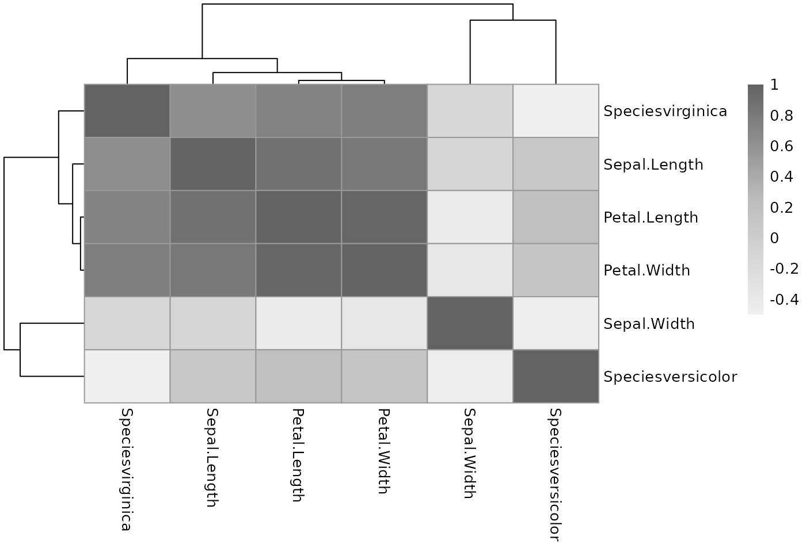

vignettes/session_lecture.Rmd
session_lecture.RmdThe model: \(y_i = E[y|x] + \epsilon_i = \beta_0 + \beta_1 x_{1i} + \beta_2 x_{2i} + ... + \beta_p x_{pi} + \epsilon_i\)
Random component of \(y_i\) is normally distributed: \(\epsilon_i \stackrel{iid}{\sim} N(0, \sigma_\epsilon^2)\)
Systematic component (linear predictor): \(\beta_0 + \beta_1 x_{1i} + \beta_2 x_{2i} + ... + \beta_p x_{pi}\)
Link function here is the identity link: \(g(E(y | x)) = E(y | x)\). We are modeling the mean directly, no transformation.
The model: \[ Logit(P(x)) = log \left( \frac{P(x)}{1-P(x)} \right) = \beta_0 + \beta_1 x_{1i} + \beta_2 x_{2i} + ... + \beta_p x_{pi} \]
Random component: \(y_i\) follows a Binomial distribution (outcome is a binary variable)
Systematic component: linear predictor \[ \beta_0 + \beta_1 x_{1i} + \beta_2 x_{2i} + ... + \beta_p x_{pi} \]
Link function: logit (Converts Prob -> log-odds) \[ g(P(x)) = logit(P(x)) = log\left( \frac{P(x)}{1-P(x)} \right) \] \[ P(x) = g^{-1}\left( \beta_0 + \beta_1 x_{1i} + \beta_2 x_{2i} + ... + \beta_p x_{pi} \right) \]
\[ log(E[Y_i]) = \beta_0 + \beta_1 \textrm{RACE}_i + \beta_2 \textrm{TRT}_i + \beta_3 \textrm{ALCH}_i + \beta_4 \textrm{DRUG}_i \] Or equivalently: \[ E[Y_i] = exp \left( \beta_0 + \beta_1 \textrm{RACE}_i + \beta_2 \textrm{TRT}_i + \beta_3 \textrm{ALCH}_i + \beta_4 \textrm{DRUG}_i \right) \] where \(E[Y_i]\) is the expected number of emergency room visits for patient i.
Instead, model mean count per unit time: \[ \begin{aligned} log(E[Y_i]/t_i) = \beta_0 + \beta_1 \textrm{RACE}_i + \beta_2 \textrm{TRT}_i + \beta_3 \textrm{ALCH}_i + \nonumber \\ \beta_4 \textrm{DRUG}_i \end{aligned} \]
Or equivalently: \[ \begin{aligned} log(E[Y_i]) = \beta_0 + \beta_1 \textrm{RACE}_i + \beta_2 \textrm{TRT}_i + \beta_3 \textrm{ALCH}_i + \nonumber \\ \beta_4 \textrm{DRUG}_i + log(t_i) \end{aligned} \]
\(E[Y_i]/t_i = \lambda_i\) \(log(E[Y_i]/t_i) = log(\lambda_i)\) \(log(E[Y_i]) = log(\lambda_i) + log(t_i)\)
Recalling the log-linear model systematic component: \[ \begin{aligned} log(E[Y_i]) = \beta_0 + \beta_1 \textrm{RACE}_i + \beta_2 \textrm{TRT}_i + \beta_3 \textrm{ALCH}_i + \nonumber \\ \beta_4 \textrm{DRUG}_i + log(t_i) \end{aligned} \]
Then the systematic part of the GLM is: \[ log(\lambda_i) = \beta_0 + \beta_1 \textrm{RACE}_i + \beta_2 \textrm{TRT}_i + \beta_3 \textrm{ALCH}_i + \beta_4 \textrm{DRUG}_i \] Or alternatively: \[ \lambda_i = exp \left( \beta_0 + \beta_1 \textrm{RACE}_i + \beta_2 \textrm{TRT}_i + \beta_3 \textrm{ALCH}_i + \beta_4 \textrm{DRUG}_i \right) \]
\[ \frac{exp \left( \beta_0 + 0 + \beta_2 \textrm{TRT}_i + \beta_3 \textrm{ALCH}_i + \beta_4 \textrm{DRUG}_i \right)}{exp \left( \beta_0 - 0.5 + \beta_2 \textrm{TRT}_i + \beta_3 \textrm{ALCH}_i + \beta_4 \textrm{DRUG}_i \right)} \] \[ = \frac{e^{\beta_0} e^0 e^{\beta_2 \textrm{TRT}_i} e^{\beta_3 \textrm{ALCH}_i} e^{\beta_4 \textrm{DRUG}_i}} {e^{\beta_0} e^{-0.5} e^{\beta_2 \textrm{TRT}_i} e^{\beta_3 \textrm{ALCH}_i} e^{\beta_4 \textrm{DRUG}_i}} \] \[ = \frac{e^0}{e^{-0.5}} \] \[ = e^{0.5} \approxeq 1.65 \]
See ?USJudgeRatings for dataset, ?pairs for plot code: **Pairwise scatterplot of continuous variables in US Judge Ratings dataset
One categorical variable, so use model matrix. Make a simple heatmap.
mm <- model.matrix( ~ ., data = iris) pheatmap::pheatmap(cor(mm[, -1]), #-1 gets rid of intercept column color = colorRampPalette(c("#f0f0f0", "#bdbdbd", "#636363"))(100))
Note: multicollinearity exists between multiple predictors, not between predictor and outcome